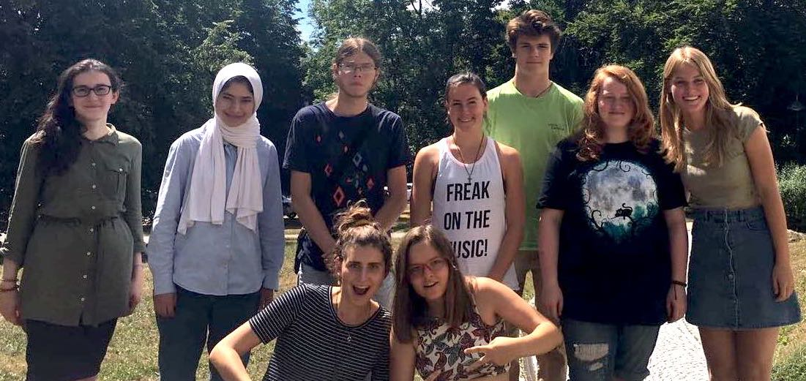
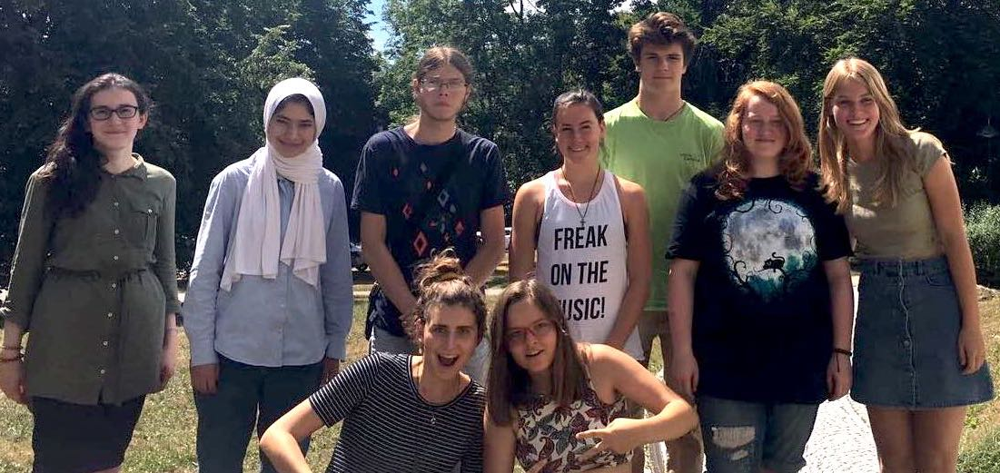

Astronomic Research Internship (Python)
In 2018, I completed two voluntary astronomic research internships at “Haus der Astronomie – Center for Astronomy Education and Outreach” / “Max-Planck Institute for Astronomy” in Heidelberg, Germany, to learn more about astronomy, research and coding
For both internships, I familiarized myself with the Python programming language as other application software like ImageJ beforehand and continued learning and exploring while working on the projects.
During the first international internship (3 weeks), me and eight other students from all over the world worked together on a research project about black holes. We used original imaging data from the NACO instrument at ESO’s VLT for the central regions of the Milky Way to determine the positions of reference masers as well as of the star S2 near the central black hole, estimate the motion of S2 in a unified reference frame based on those masers, and apply Kepler’s Third law to the result in order to estimate the central black hole’s mass.
During my second individual internship (10 weeks), I performed several kinds of analysis related to the question of how the cosmic microwave background radiation reaches an observer on Earth. As part of the research, I applied basic concepts and formulae of modern cosmological models for the expanding universe, and then used data from the Illustris numerical simulations, which I analyzed by writing suitable Python scripts, to estimate the stellar number density, average gas particle number density and the variations of those properties due to smaller-scale inhomogeneities in the cosmos.
In parallel, I attended lectures and talks (including one during the visit of NASA astronaut Wendy Lawrence), participated in a teacher training workshop as well as an astrophotography workshop, and I spent a week as an intern with the editorial staff of the popular astronomy magazine “Sterne und Weltraum” (literally “Stars and Space”) which has its offices in Haus der Astronomie.
Before the internships I was not familiar with coding, so I pretty much jumped in at the deep end. The more complex the projects and research phases got, the more I fell in love with coding. After the internship, I continued doing my own Python projects in my free time, like coding a password generator and the game battleships. I also really enjoyed working together with an international team during my first internship, which influenced me to move to The Netherlands to pursue an international Bachelor.
 
